The AI Super Assistant
That Lives On Your Computer
For everyone — not just professionals and enterprises. Your local model, plus Claude, GPT, Gemini and DeepSeek, building and automating your work in one agent.
Free. Private by design. Just install LocalBotz — that's it. No Git, no separate downloads, nothing leaves your computer unless you ask it to.
Qwen3.5 local · Claude Sonnet · GPT-4o · Gemini 2.5 · DeepSeek · Grok · Kimi · GLM
Use whichever models are available — your computer, your keys, or rent premium from us.
How it works — from download to done
Four steps. No terminal, no Git, no separate downloads. The installer sets everything up for you, once.
Download one ZIP
Get LocalBotz from GitHub — one file, for Windows or Mac. That's the only thing you download.
Double-click install
The installer sets up Python, LM Studio with Qwen3.5, and browser automation for you. First run takes a while — after that, it's instant.
Tell it what to do
Chat with a bot, pick a template, or hire your own AI office team. Give it the job in plain words.
It works on your computer
Your agents build, research, and automate — on your local model for free, your subscriptions, or premium models rented from us.
Try it here
Play with the idea before you install it. Pick a project below — LocalBotz builds it with you, on your own computer, after you install it.
What should we build?
Try one of these. The real LocalBotz app opens on your computer at localhost:8000 after you install it.
All-in-one AI platform — use AI for everything
Real projects, on your own computer. Ask LocalBotz to build them in one conversation.
A website that takes payments
LocalBotz builds a multi-page website with Stripe built in — a quick way to market and to test demand.
Build a mobile app
A fitness app that tracks your daily goals, workouts and progress — built from one conversation.
Vibe-code a CRM
A CRM for contacts and deals, built to your words and extended whenever you ask.
An agent that keeps your app bug-free
A persistent agent that checks your app, finds bugs and fixes them — and gets better with every run.
Research 50 companies in parallel
Your office team researches the top companies at once and builds a portfolio plan from the results.
Your team reviews your code
Your agents review your last pull requests in parallel — bugs, missing tests, security issues — then apply fixes.
A trading agent with a goal
Set a measurable goal and let an agent research, track and adapt a strategy based on what works.
Investor-ready presentations
Deep research, synthesized into a professional slide deck with accurate insights and clean formatting.
LinkedIn outreach, on autopilot
LocalBotz finds opportunities and drafts outreach in your voice — you approve before anything is sent.
Revenue analytics from raw data
Turns your business data into clear insights with automated spreadsheet analysis — patterns and growth, found for you.
A morning brief, every day at 8
What came in, what is due, drafts ready to send — from your inbox and calendar, every morning.
Answers from your own docs
Ask questions over any website or documentation and get instant, accurate answers — with the limits stated honestly.
Orders from WhatsApp, as a daily list
Order PDFs from your team WhatsApp group are read, logged and turned into one clean daily list.
Invoices, read and logged
Upload invoices as PDF or image and get vendor, total, due date and line items — no manual typing.
A live news radar
Funding rounds, market news and the topics you follow — checked through the day and summarized for you.
Social posts in your voice
LocalBotz learns your style, watches what performs, and drafts posts that sound like you.
Research reports with citations
Deep research across fields, written up as a structured report with sources — ready to share.
A forecasting dashboard on live data
Pulls the numbers in, charts them and refreshes every morning — your sales, explained.
The AI super assistant to automate all work
One agent, everything it needs to do the job — on your own computer.
State-of-the-art models. Your local Qwen3.5, plus Claude, GPT, Gemini, DeepSeek, Grok, Kimi and GLM — whichever are available.
Automate pretty much any task. Build apps and websites, research, write, review code, run routines — in one conversation.
Connect to the apps you use. 25 popular connectors — Gmail, Slack, Notion, GitHub, Stripe, Zoom and more.
Build custom bots and agents. 15 templates, your own instructions and memory, persistent agents that work while you're away.
Your own AI office team. A boss and a team with shared memory, working together on your computer.
Permissions you control. Ask, auto, or full — you decide what an agent may do, and nothing runs without your say.
How LocalBotz runs
Use the subscriptions you already pay for to run agents in your personal office. Works with Claude, ChatGPT, Grok, Gemini and more. Give your agents your computer — or rent one from us.
🖥️ Your computer
Your agents run on your own computer, on your downloaded local model (LM Studio / Qwen3.5). Nothing leaves the computer.
🔑 Your subscriptions
Claude, ChatGPT, Grok, Gemini, DeepSeek and more — add each key once, and LocalBotz sends it only to that provider.
☁️ Rent one from us
No keys of your own? Premium models (Claude Sonnet, GPT, Gemini) from our server — register on the VPS and use them, metered to your wallet.
Your office — hire a team, give everyone a face
An office of AI agents on your own computer. You hire the team, give each one a role, a face and a model, and hand them work in plain words. They plan it, do it, and report back.
👔 Boss → 🔍 Researcher → ✍️ Writer → 💻 Developer → 📊 Analyst → 🤖 Assistant
One brief from you. The team works in order — research, then write or build, then review — each one seeing the brief, the shared memory, and the work done before it.
Everyone gets a face
Start from role templates or write your own. Each agent gets a name, a face and the model it runs on. Add, swap or rename them any time.
Bring the subscriptions you already pay for
Your agents run on the models you already have — your local Qwen3.5, your Claude, ChatGPT, Grok, Gemini keys, or premium from us. Each agent runs on the model that suits its job.
What one agent learns, the others can find
The whole office shares one memory you can read, search and back up. It grows with every day of work — that is your personal intelligence.
Your office keeps working
Persistent agents pick up tasks on their own and report back, even while you're away. Give a goal, come back to the result.
Plug in a skill. Your agent knows it.
25 popular connectors, MCP servers, skills and tools — Gmail, Slack, Notion, GitHub, Stripe and more. Or connect anything with an API.
Runs on your computer. Your context stays yours.
Your agents, their memory and your files live in folders on your computer: plain files you can open, back up or delete. Nothing about how you work has to live on someone else's server.
Build your office — get LocalBotz free
A team of AI specialists that think as one
LocalBotz gives you a team of AI specialists that think as one. Ask the team a question and it pools what every member knows: independent first takes, options backed by evidence, and a decision you can follow line by line. Open source, private, and yours to run on your own machines with your own models.
🧐 Checked before it reaches you
Every job is checked by an independent Auditor who didn't do the work — prices, dates and facts, verdict pass or fail. The finished job is a draft until you approve it.
📄 Every answer shows its source
Ask the workroom a question and the answer comes with the exact document and passage it came from. No made-up prices, measurements or dates.
📋 Line by line
Every step, every check and every decision is on the record — the blackboard, the audit, the approval. You can follow a decision line by line, and change your mind at any step.
🧠 Learns from daily tasks
The team learns from your daily work — what you want, how you price a quotation, what you always check — and keeps a record. When you need it, it presents what it learned: your pricing, your way of working, ready when the next quotation comes in.
Pricing — rent one from us
Your computer is free, and your subscriptions cost whatever your provider charges. Renting our computer is pay-as-you-go, per 1M tokens. Local models are always free.
🖥️ Your computer — $0
Local model (LM Studio / Qwen3.5) on your own computer. Unlimited, no bill, nothing leaves your computer.
🔑 Your subscriptions
Claude, ChatGPT, Grok, Gemini and more — you pay whatever your provider charges for your own API key. LocalBotz adds nothing on top.
☁️ Rent one from us
Claude Sonnet $3 in / $15 out · GPT-4o $2.50 in / $10 out · GPT-4o mini $0.15 in / $0.60 out · Gemini 2.5 Flash $0.30 in / $2.50 out · Gemini 2.5 Pro $1.25 in / $10 out · DeepSeek $0.27 in / $1.10 out. USD per 1M tokens.
Open source
Every line is on GitHub
MIT licensed and built in the open. Read the code, run it from source, or send a pull request.
Download LocalBotz
Your local model, plus Claude, GPT, Gemini and DeepSeek in one open-source agent that builds, codes and automates your work, right on your own computer.
Download for Windows
Windows 10 and 11. Just install LocalBotz — that's it.
Get LocalBotz for WindowsGoes to our GitHub page.
Then click Code → Download ZIP, extract it,
and double-click install.bat.
Or download the ZIP directly.
Download for Mac
Apple Silicon and Intel Macs. Just install LocalBotz — that's it.
Get LocalBotz for MacGoes to our GitHub page.
Then click Code → Download ZIP, open it,
and double-click start.command.
Or download the ZIP directly.
Download for Linux
Ubuntu and other distros. Just install LocalBotz — that's it.
Get LocalBotz for LinuxGoes to our GitHub page.
Then click Code → Download ZIP, extract it,
and run ./start.sh.
Or download the ZIP directly.
No Git needed. No separate Python, LM Studio or model download — the installer sets all of that up for you. Full steps: Download page · DOWNLOAD.md · Full guide